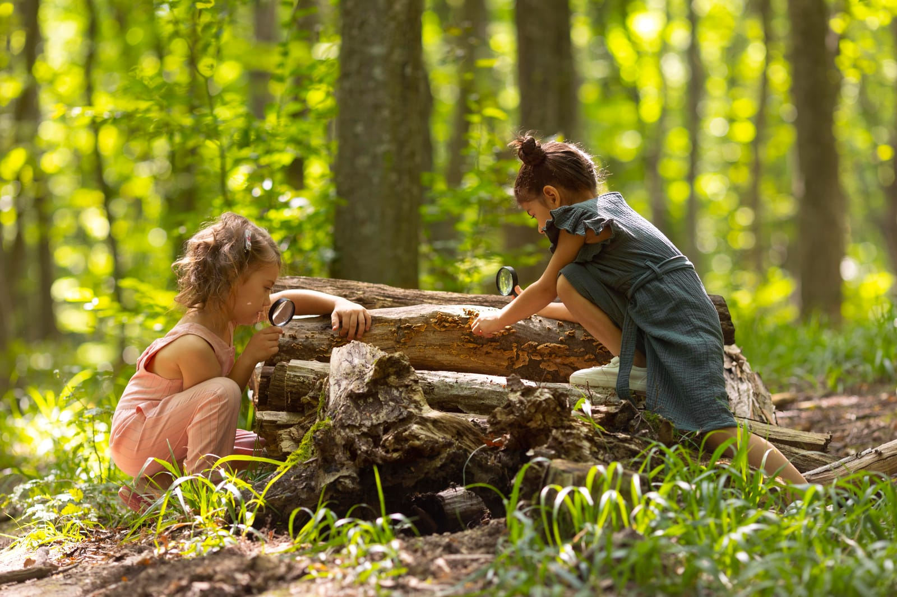

Geleceği Doğadan Tasarla4 element · 4 pencere
Geleceği Doğadan Tasarla Hareketi
Geleceği Doğadan Tasarla Hareketi bireyleri doğaya yaklaştırarak kendi potansiyellerini gerçekleştirmelerini destekler.
Dünyamız, adeta bir senfoni gibi... Farklı sesler, farklı melodiler, hepsi bir araya gelerek büyüleyici bir uyum yaratıyor. Bu senfonide her sesin önemi var, her melodinin yeri var. Peki, ya bu senfonide bazı sesler duyulmuyorsa, bazı melodiler çalınmıyorsa?
Bu senfoninin en önemli unsurlarının doğanın dört elementi ile yakından ilgili olduğunu biliyor muydunuz?
Yaklaşımımız
Geleceği Doğadan Tasarla Hareketi Yaklaşımımız
Kalıcı davranış değişikliği, tek bir eğitim ya da atölyeyle gerçekleşmez. Bu nedenle Geleceği Doğadan Tasarla programlarımızı; seminerler, deneyimsel atölyeler ve kurum içi iletişim çalışmalarıyla birbirini tamamlayan gelişim yolculukları olarak tasarlıyoruz.
Programlarımız, davranış değişikliği alanında yaygın olarak kullanılan bilimsel modellerden ilham alarak tasarlanır. Araştırmalar, kalıcı davranış değişikliğinin tek seferlik eğitimlerle değil; belirli aralıklarla gerçekleşen tekrar eden temaslar ve uygulamalarla desteklendiğinde daha başarılı olduğunu göstermektedir. Bilimsel davranış değişikliği modellerinden ilham alarak, hedeflenen kazanım için en az 4 temas öneriyoruz. Her temas, katılımcının öğrendiklerini günlük yaşamına taşımasını destekler; belirli aralıklarla gerçekleşen bu süreç, farkındalığın kalıcı alışkanlıklara dönüşmesine katkı sağlar.
İhtiyaca göre programlarımız 4, 8 veya yıl boyu devam eden temaslarla kurumunuza özel olarak planlanabilir.

Pencere 01
Toprak
Çevre
Doğa Elementi: Toprak
Anlatı
Toprak, yaşamın başladığı ve sürdüğü yerdir. Sessizce besler, korur ve geleceği bugünden inşa eder. Biz de çevreyi aynı bakış açısıyla ele alıyor; seminerlerimiz ve doğadan hobi atölyelerimizle kurumların ve bireylerin sürdürülebilir yaşam alışkanlıkları geliştirmelerine, karbon ayak izlerini azaltmalarına ve doğayla daha güçlü bir bağ kurmalarına katkı sağlıyoruz.

Ne Sunuyoruz
Kurumlara çevre farkındalık programları sunuyoruz: iklim değişikliği, kirlilik kaynakları, biyoçeşitlilik, sürdürülebilir kalkınma, enerji tasarrufu, su ve atık yönetimi konularında hem bilgi hem pratik beceri kazandıran seminer ve doğadan hobi atölyeleri.
Bu Pencerede Yer Alacak Programlar / Atölyeler
- Karbon Ayak İzimizi Azaltalım (Seminer)
- Akıllı Mutfak Akıllı Alışveriş (Seminer)
- Yeni Başlayanlar İçin Kentte Ekolojik Yaşam (Seminer)
- Sürdürülebilir Yaşam: Kompost Yapımı (Deneyim)
- Doğayla Kavuşma Zamanı: Orman Banyosu Etkinliği (Deneyim)
- Doğanın İlhamıyla Geri Dönüşüm Çiçek Aksesuar Tasarım Atölyesi (Deneyim)
- Sahi Bu Ne Demek Konuşma Serileri (Seminer)
Pencere 02
Su
Kadın
Doğa Elementi: Su
Anlatı
Su, hem durgun derinliği hem de dalgaların gücüyle yaşamın akışını temsil eder. Kadın da tıpkı su gibi; uyum sağlayan, dönüştüren ve ilham veren bir güçtür. Bu nedenle seminerlerimiz ve doğadan hobi atölyelerimiz kadınların doğal liderlik ve girişimci ruhunu destekleyerek sürdürülebilir fikirleri hayata geçirmelerine odaklanır.
Ne Sunuyoruz
Kadınların bedenlerini ve zihinlerini en iyi şekilde kullanmalarını destekleyen fiziksel ve ruhsal sağlık gelişim programları sunuyoruz — egzersiz, beslenme, stres yönetimi, kişisel gelişim ve doğadan ilhamla üretim/atölye deneyimlerini bir araya getiriyoruz.
Bu Pencerede Yer Alacak Programlar / Atölyeler
- Rahmin Bilge Yolu (Seminer)
- Minimalist Ebeveynlik (Seminer)
- Beslenmede Farkındalık (Seminer)
- Ekolojik Yaşam Yolu: Ne Yersek O'yuz Ne Giyersek O'yuz (Seminer)
- Aromaterapi ile Doğal Temizlik Atölyesi (Deneyim)
- Toprak Elementini Dengelemek: Güvende ve Sağlam Hissetmek (Seminer)
- Bir Ekosistem Tasarlıyoruz: Teraryum Atölyesi (Deneyim)
- Wabi-Sabi Felsefesiyle Saksısız Bitki Yetiştirme Atölyesi (Deneyim)
Pencere 03
Ateş
Çocuk
Doğa Elementi: Ateş
Anlatı
Ateş, kadim öğretilerde yaşam enerjisinin, dönüşümün ve harekete geçme gücünün simgesidir. Çocuk da bu enerjiyi en doğal haliyle merakı, keşfetme isteği ve öğrenme heyecanıyla taşır. Doğadan hobi atölyelerimizle çocukların bu potansiyelini güçlendirirken, doğayla bağ kuran ve yaşadığı dünyaya karşı sorumluluk hisseden bireyler yetişmesine katkı sağlıyoruz.

Ne Sunuyoruz
4-14 yaş arası çocuklara yönelik, doğadan materyaller ve el sanatlarıyla desteklenen, eğlenceli ve interaktif beceri geliştirme atölyeleri sunuyoruz. Bu atölyeler aynı zamanda ebeveyn-çocuk birlikte katılımına da açık, özel gün etkinlikleri olarak kurgulanabilir.
Çocuk ve Aile Etkinlikleri
Kurumların aile günü, yaz kampı, bayram kutlamaları ve çocuklara yönelik özel gün etkinlikleri için doğadan ilham alan hazır programlar sunuyoruz. 23 Nisan Ulusal Egemenlik ve Çocuk Bayramı, 5 Haziran Dünya Çevre Günü gibi özel günleri, yalnızca kutlanan etkinlikler olmaktan çıkarıp çocukların doğayla bağ kurduğu anlamlı deneyimlere dönüştürüyoruz.
Geleceği korumanın ilk adımı, çocukların doğayı tanıması ve sevmesidir. Çünkü insan, bağ kurduğu şeyi korumak ister. Doğadan ilham alan deneyimsel atölyelerimiz ve etkinliklerimizle çocukların doğayla kalıcı bir bağ kurmalarını desteklerken, kurumların sürdürülebilirlik ve sosyal etki hedeflerine de katkı sağlıyoruz.
Bu Pencerede Yer Alacak Programlar / Atölyeler
- Kuş Evi Tasarım Atölyesi (Deneyim, 4-14 yaş)
- Mini Kavanoz Teraryum Atölyesi (Deneyim, 4-14 yaş)
- Saksısız Bitki Yetiştirme (Kokedama) Atölyesi (Deneyim, 4-14 yaş)
- Kağıt İleri Dönüşüm Atölyesi (Deneyim, 4-14 yaş)
- Minik Çiftçiler (Deneyim, 4-14 yaş)
- Doğadan Çerçeve Tasarım Atölyesi (Deneyim, 4-14 yaş)
- Bez Çanta Kişiselleştirme Atölyesi (Deneyim, 4-14 yaş)
Pencere 04
Hava
İş Dünyası
Doğa Elementi: Hava
Anlatı
Hava, görünmez bağların, iletişimin, hareketin ve çevikliğin simgesidir. Doğadaki ekosistemler, yaşamlarını sürekli etkileşim, iş birliği ve değişime uyum sayesinde sürdürür; biz de iş dünyasını aynı bakış açısıyla yaşayan bir ekosistem olarak görüyoruz. Değişimin kaçınılmaz olduğu iş dünyasında, kurumların da doğa gibi çevik, uyumlu ve öğrenen yapılar kurması gerektiğine inanıyoruz. Bu nedenle doğadan ilham alan eğitimlerimiz ve deneyimsel atölyelerimizle kurumların iletişim kültürünü güçlendirmelerine, çevik çalışma anlayışını benimsemelerine ve değişimin mimarı olmalarına katkı sağlıyoruz.
Ne Sunuyoruz
Doğanın milyonlarca yıllık deneyiminden ilham alarak; iş dünyasının ihtiyaç duyduğu yetkinlikleri araştırmaya dayalı ve deneyimsel öğrenme yöntemleriyle geliştiriyoruz. Eğitimlerimiz, çalışanların kurumlarına aidiyet duymasını, sorumluluk almasını ve iş birliğiyle değer üreten ekipler oluşturmasını destekleyen bütünsel bir gelişim deneyimi sunuyor.